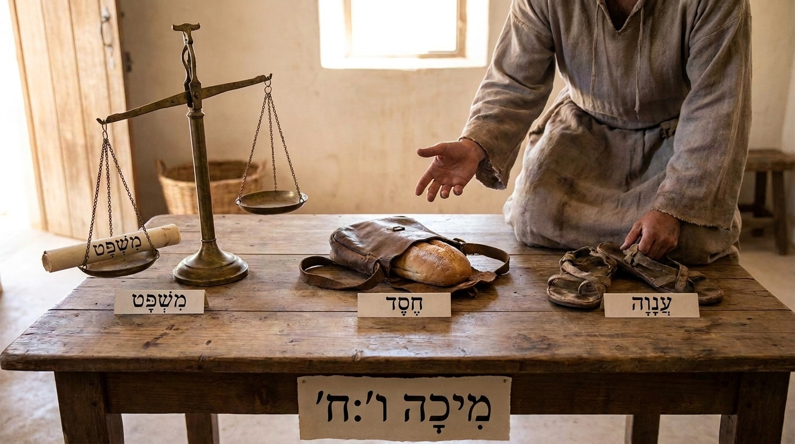

Justiça, Misericórdia e o Messias
O livro de Miqueias é um alerta duplo, dirigido tanto a Israel (norte) quanto a Judá (sul). O profeta denuncia fortemente os líderes políticos e religiosos que estavam corrompidos, roubando terras dos pobres e praticando uma falsa religiosidade. Deus avisa que o julgamento virá e as cidades serão destruídas. Mas no meio desse cenário sombrio, Miqueias traz grandes promessas de esperança: a restauração do remanescente de Israel e a profecia exata de que o Messias Eterno, o futuro Rei de paz, nasceria na pequena e humilde cidade de Belém.
Ficha Técnica
- Autor: O profeta Miqueias (da cidade de Moresete).
- Tema Principal: O julgamento contra a corrupção e injustiça social, a verdadeira adoração e a promessa do Messias de Belém.
- Versículo-Chave: "Ele mostrou a você, ó homem, o que é bom e o que o Senhor exige: Pratique a justiça, ame a fidelidade e ande humildemente com o seu Deus." (Miqueias 6:8)
Estrutura
- O julgamento iminente sobre as capitais, Samaria e Jerusalém (Caps. 1-2)
- Condenação dos falsos líderes e a promessa do Messias de Belém (Caps. 3-5)
- O "tribunal" de Deus contra o povo e o triunfo final da misericórdia divina (Caps. 6-7)